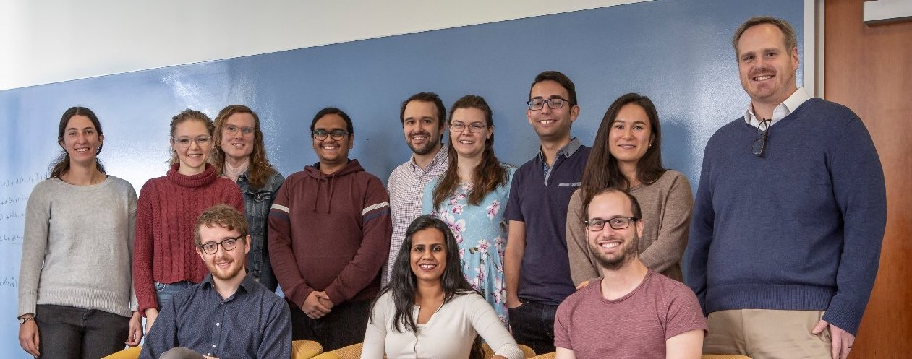
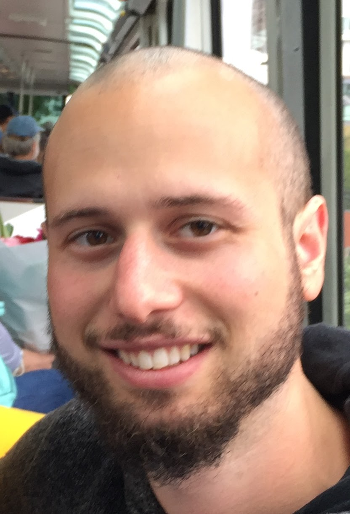
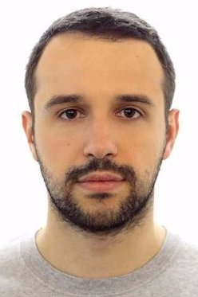

|  |
|
 |
Michael Schatz, Ph.D.
Bloomberg Distinguished Associate Professor, JHU
Adjunct Associate Professor of Quantitative Biology, CSHL
Adjunct Assistant Professor of Computer Science, Stony Brook University |
Office: Malone 328
Phone: 703-966-1987
mschatz [at] jhu.edu
Home page
|
| |
Srividya Ramakrishnan
Computational Analyst |
Office: Malone Hall
|
| |
Sam Kovaka
Postdoctoral Fellow, Computer Science |
Office: Malone Hall
|
 |
Shujun Ou
Postdoctoral Fellow, Computer Science |
Office: Malone Hall
|
 |
Arun Das
Ph.D. Student, Computer Science |
Office: Malone Hall
Home page
|
| |
Katie Jenike
Ph.D. Student, Human Genetics |
Office: Malone Hall
|
| |
Margaret Starostik
Ph.D. Student, Cell, Molecular, Developmental Biology & Biophysics |
Office: Malone Hall
|
| |
Samantha Zarate
Ph.D. Student, Computer Science |
Office: Malone Hall
Home page
|
| |
Bohan Ni
Ph.D. Student, Computer Science |
Office: Malone Hall
|
| |
Alex Sweeten
Ph.D. Student, Computer Science, Joint with Genome Informatics Section at NIH |
Office: Malone Hall
|
| |
Melanie Kirsche, Ph.D.
Computer Science, Johns Hopkins University
Currently at Variant Bio |
|  |
Michael Alonge, Ph.D.
Computer Science, Johns Hopkins University
Currently Lead Computational Biologist at Ohalo Genetics |
|  |
Sergey Aganezov, Ph.D.
Postdoctoral Fellow, Johns Hopkins University
Currently Genomic Applications Scientist at Oxford Nanopore |
| |
T. Rhyker Ranallo-Benavidez, Ph.D.
Biomedical Engineering, Johns Hopkins University
Currently a postdoc at UNC-Charlotte |
 |
Charlotte Darby, Ph.D.
Computer Science, Joint with Langmead Lab, Johns Hopkins University
Currently Research Scientist at Takeda Oncology |
 |
Ruibang Luo, Ph.D.
Postdoctoral Fellow
Currently Assistant Professor at The University of Hong Kong |
 |
Fritz Sedlazeck, Ph.D.
Computational Science Analyst
Currently Research Assistant Professor at Baylor College of Medicine |
 |
Giuseppe Narzisi, Ph.D.
Computational Science Analyst
Currently Senior Bioinformatics Scientist at NY Genome Center
|
| |
Shoshana Marcus, Ph.D.
Computational Postdoc
Currently Assistant Professor at City University of New York |
 |
Han Fang, Ph.D.
Grad Student
Applied Math and Statistics, SBU
Currently Data Scientist at Facebook |
 |
Maria Nattestad, Ph.D.
Grad Student
Watson School of Biological Sciences, CSHL
Currently Senior Software Engineer at Google Health |
 |
Robert Aboukhalil, Ph.D.
Grad Student
Watson School of Biological Sciences, CSHL
Currently Senior Software Engineer at the Chan-Zuckerberg Initiative |
| |
Tyler Garvin, Ph.D.
Grad Student
Watson School of Biological Sciences, CSHL
Currently at a startup in San Francisco |
| |
Hayan Lee, Ph.D.
Grad Student
Computer Science, Stony Brook University
Currently a postdoc at Stanford |
| |
James Gurtowski
Scientific Developer
Currently an associate at Target Rock Partners |
 |
Mitch Bekritsky
Grad Student
Watson School of Biological Sciences, CSHL
Currently at Illumina |
| |
Aspyn Palatnick
High School Student
Cold Spring Harbor High School
Currently an undergrad at the University of Pennsylvania |
 |
Alejandro Hernandez Wences
Undergraduate Student
Genomic Sciences, National Autonomous University of Mexico
Currently in masters program at National Autonomous University of Mexico |
| |
Laura Gomez-Romero
Visiting PhD Student
Genomic Sciences, National Autonomous University of Mexico
Finishing Ph.D. at National Autonomous University of Mexico |
 |
Marley Alford
Undergraduate Researcher, 2015
Mathematics, Bard College
Currently finishing undergraduate program at Bard College |
 |
Rachel Sherman, Ph.D.
Undergraduate Researcher, 2014
Computer Science and Mathematics, Harvey Mudd
Currently a Senior Bioinformatics Support Scientist at Illumina |
 |
Greg Vurture
Undergraduate Researcher, 2013
Computer Science and Mathematics, NYU
Currently a MD Student at NYU |
| |
Eric Biggers
Undergraduate Researcher, 2012
Computer Science and Mathematics, Macalester College
Working as a software engineer |
 |
Paul Baranay
Undergraduate Researcher, 2011
Biology and Applied Mathematics, University of Notre Dame
Working as a software engineer |